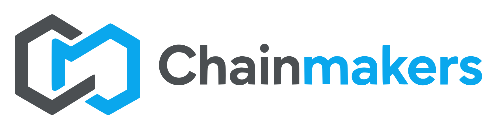

Discover
Understand how the business actually works.

Build with us ↗AI-NATIVE PRODUCT & SYSTEMS COMPANY
AI-native systems for businesses with fragmented workflows, manual processes and industry-specific problems.
01 / THE THESIS
Some of the most valuable software opportunities are hidden inside mundane workflows: permits, accounting, healthcare intake, documentation, billing, approvals and compliance.
We find those workflows and turn them into systems.
Understand how the business actually works.
Turn the workflow into specialized software.
Add agents and integrations where they create ROI.
02 / PRODUCTS
Chainmakers is the machine that creates the products.
01 / IN PRODUCTION
Business operations & accounting OS
Accounting, expenses, payroll, permits, reporting and operational intelligence for small and mid-sized businesses in Puerto Rico.
chainaccounts.io ↗02 / IN PRODUCTION
Healthcare workflow infrastructure
Referral intake, authorization, document processing and clinical operations infrastructure for home healthcare providers.
Explore MedReq ↗03 / BUILDING
Compliance & permit operations
Track licenses, permits, renewals, documentation and regulatory workflows across organizations.
Talk about the workflow ↗Next product ▧ The next workflow is already being mapped.
03 / CAPABILITIES
Four capabilities. One operating philosophy.
Vertical SaaS, internal tools and operational software built around specific workflows.
Replace repetitive work involving documents, email, spreadsheets and disconnected systems.
Agents that reason over company knowledge, execute workflows and interact with existing systems.
APIs, MCP servers, databases, legacy systems and third-party platforms connected into one operational layer.
04 / THE METHOD
From operational reality to a system that compounds.
Understand the real workflow.
Turn fragmented information into data.
Build the operational platform.
Remove repetitive human work.
Deploy AI agents where judgment is required.
05 / BUILT FROM REAL OPERATIONS
Products begin inside operating businesses, then become scalable systems.
ChainAccounts comes from running businesses. MedReq comes from healthcare operations. The work is grounded before it is generalized.
06 / AI INFRASTRUCTURE
Models change. The operating layer stays useful.
We design systems so models are interchangeable. The intelligence layer can evolve without rebuilding the business.
07 / COMPANY
Many workflows were never large enough for Salesforce, Oracle or SAP to build software for them.
AI changes the economics of building that software. Chainmakers identifies those workflows and turns operational knowledge into products.
Products. Platforms. Agents. Infrastructure.
08 / BUILD WITH US
If your company depends on spreadsheets, PDFs, email, manual data entry or systems that don't communicate with each other, there's probably a system waiting to be built.